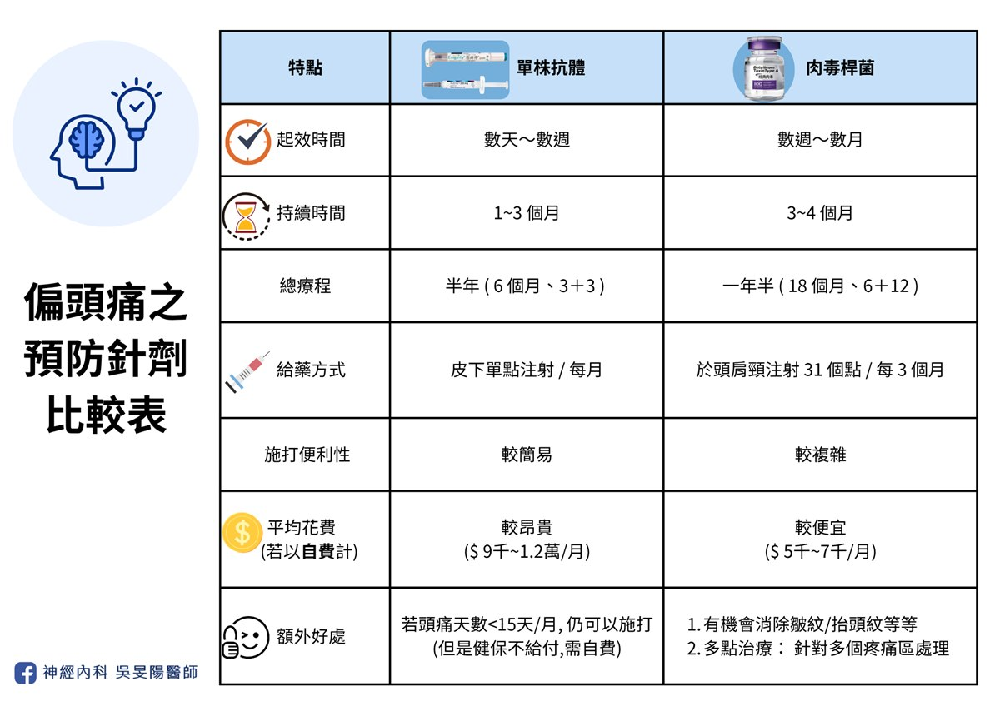
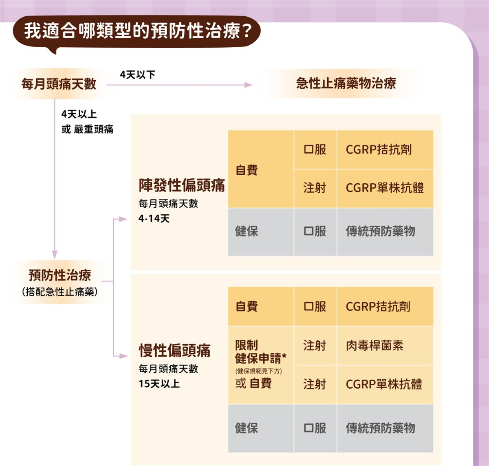

偏頭痛「預防藥治療」攻略：長效針劑比較和選擇 (三)

在前篇的針劑藥物個別探討之後，這一篇希望可以給大家實用的選藥建議，以及各種情況的考量與討論，我也整理了常見迷思問答，希望對各位有幫助！
自費使用考量－不只是「買藥」，更是「買時間」
若傳統藥物遇到瓶頸，針劑是非常好的頭痛武器，台灣健保需要患者持續寫「頭痛日記」3 個月以上，並證明已嘗試過 3 種不同類型的傳統藥物或是副作用無法忍受，卻依然無效後，才能由神經科醫師送件申請。
這三個多月的「日記等待期」，要一邊與頭痛共處、持續吃藥，也要一邊忠實記錄頭痛日記，雖然傳統藥物有一定療效，但若是偏頭痛嚴重的病友，就算有最強的止痛藥陪伴，每一天仍然過得煎熬，甚至陷入藥物成癮的風險！
不願經歷這些漫長過程的病人，可以考慮「先自費啟動治療」。那會花多少錢呢？我簡單算給你看（以台灣目前行情估計）：
單株抗體針劑：依據廠牌不同，目前市場平均行情單劑（每月一次）約落在 9,000 至 12,000 元之間。
- 若比照健保療程，全自費施打半年，藥價約在 $50,000 至 $70,000 之間。
肉毒桿菌注射：依照國際標準注射指引，每三個月施打一次的費用約在 $15,000 至 $20,000 元上下。換算下來，每個月的負擔約為 $5,000 至 $7,000 元。
- 若比照健保療程，全自費施打一年半，藥價約在 $90,000 至 $120,000 之間。
- 以上都是只計算藥費而已，尚未考慮掛號費、診查費、醫事費等等⋯⋯。
- 以本院來說，自費療程並不需要預先支付往後數個月的療程喔，因此有意願啟動自費治療的病友，可以用單次打針的費用去評估～覺得有效再繼續自費，或者是同時申請健保給付。
本段落僅提供目前醫學市場之平均行情參考，實際費用因各醫療機構收費標準、療程規劃及耗材而異，請務必以診間醫師諮詢與醫院公告為準。
選擇自費最大的好處在於：「買回被頭痛偷走的時間」。如果經濟狀況許可，提前啟動精準治療，更有機會讓你盡早恢復社交與工作。此外，在自費治療的過程中的治療反應紀錄，也能作為強而有力的臨床證據。對於未來若要銜接申請健保給付時，能派得上用場。
這筆投資你值得好好考慮。歡迎到診間找醫師討論喔！
別急！預防針不是止痛針－「三個月評估期」
無論是單株抗體針劑、還是肉毒桿菌，這類藥物在大多數情況都不是「一針見效」的萬靈丹。就像我之前提過的預防藥心法：它需要一點時間，畢竟關了火之後，要等待水溫冷卻才行，不管是傳統藥或是新藥都一樣。
因此，我會建議病友：無論是自費打針或是有健保給付，請至少給予預防針「三個月」的時間。如果只打一針覺得沒效就停藥，往往無法看到藥物的真正實力，這筆投資反而變得可惜。
當然，回到前面段落提到的，若有效的話，預防針在使用一週～兩週開始有感，相較於傳統藥物的二～四週，還是較有優勢。
長效針劑比一比

以上我比較了台灣的偏頭痛預防針劑藥物，也是重點整理，希望對各位有幫助！
另外我再分享台灣兩種單株抗體的差別：
- 用藥頻率：兩種藥物都可以每個月施打，但是艾久維 (Ajovy®) 也可以選擇每三個月打一次，一次打三支。使用上彈性更高。
注射感受：艾久維 (Ajovy®) 在推藥的速度可由施打人員決定；恩疼停 (Emgality®) 為全自動注射針，按下開關後它會 10 秒之內自動將藥物推入。
- 從推藥速度來看，理論上恩疼停感受會比較痛一些，但不需手動推藥，操作比較方便；打艾久維的時候如果很痛，可以請打針的人推慢一點，但是注射時間會拉長。
適應症差異：兩者都可用來作為陣發性偏頭痛，與慢性偏頭痛的預防藥物。但是恩疼停 (Emgality®) 多了治療叢發性頭痛的功能！
儘管恩疼停 (Emgality®) 可治療叢發性頭痛，但是台灣健保並未針對此種疾病納入健保，因此若你是叢發性頭痛患者，要施打恩疼停的話，會需要自費！
醫病用藥決策：我該選擇哪種針劑藥物？

以上截圖自台灣頭痛學會：2025 偏頭痛衛教四摺頁
除了參考上面的流程圖、看針劑比較表格之外，我也會從以下幾個切入點評估：
其他共病史：
- 對於有心血管疾病史、或是特殊型態偏頭痛患者，肉毒桿菌是相對比較安全的選擇。
- 若你同時罹患有偏頭痛和叢發性頭痛，可選用恩疼停，對於這兩種頭痛都能治療。但是治療劑量並不相同！請先諮詢醫師。
- 特殊族群：懷孕婦女的話，除了少數幾種傳統口服預防藥之外，肉毒桿菌或許是可以考慮的選擇，但是相關研究不多，需與醫師討論。
用藥便利性：若想要簡單快速的話，單株抗體會更適合。
- 肉毒桿菌一次施打要 30 多個點、相較之下單株抗體一支就打一個位置就好，比較不花時間。
頭痛日記：如果你很不愛寫日記，或是不想花太多時間紀錄，單株抗體會比較適合你。
- 首次申請健保都是先寫 3 個月。但是在續用申請時，肉毒桿菌要寫 6 個月、單株抗體寫 3 個月。因此從完整療程來說，肉毒最少要寫 9 個月、單株抗體最少寫 6 個月。
- 但是有頭痛日記，除了用健保省荷包之外，也方便醫師和病人自己掌握病況，也可作為調藥參考，所以還是呼籲大家耐心記錄～
- 頭痛日記也有手機 APP，不喜歡手寫的可以考慮，但是送審的時候還是要轉換成紙本資料喔。
- 回診就醫頻率：若你工作繁忙請假不易，或是居住於外縣市，不喜歡常跑醫院，三個月打一次的肉毒桿菌、或艾久維會比較適合。
經濟成本效益：以 CP 值來說，肉毒桿菌會比較划算。
- 雖然單次注射的價格，肉毒通常略高於單株抗體，但是因為肉毒藥效持續時間較久，需要的療程也較長，因此平均下來每個月的花費比較低。
其他個別考量：
- 若你非常怕痛、怕流血、甚至有暈針的情形，可考慮單點注射的單株抗體。
- 除了頭痛，也常伴隨頸部緊繃、肩頸痠痛的病人，可考慮肉毒桿菌。
- 如果偏頭痛相當嚴重頻繁，傳統藥物效果不佳，又不想打針，且經濟寬裕的話，可考慮自費口服標靶藥物〔請參照 Gepant 藥物推薦〕。
病友迷思破解：門診大哉問
1. 打了針之後，就不用吃口服藥了嗎？
- 陣發性偏頭痛治療的反應效果通常較好，因此打了針之後，視頭痛情況與個人意願，與醫師討論是否停藥。
- 慢性偏頭痛由於頻率高，病情較嚴重，一般建議打了針之後，還是繼續吃傳統口服藥一段時間，視頭痛改善情況，再與醫師討論逐步減藥或停藥。
- 根據國際指引，有效的預防治療應持續至少六個月（口服藥物）或十二個月（非口服藥物治療），然後才考慮停藥。當然實務上都可以再和醫師討論～
2. 打針效果有多好呢？比起吃藥來說？
- 在陣發性偏頭痛族群，單株抗體使用 3 個月之後，約可以有 4~5 成的病人可以減少一半的頭痛頻率。若使用半年，可以提高到將近 6 成！
- 在慢性偏頭痛族群，肉毒桿菌使用 3 個月之後，約可以有 4~5 成的病人可以減少一半的頭痛頻率，若長期施打（>2 年）以上，頭痛仍可有效控制，約三分之二的患者的頭痛頻率可減少一半以上
- 在慢性偏頭痛族群，單株抗體使用 3 個月之後，約可以有 3~4 成多的病人可以減少一半的頭痛頻率。若是使用半年，改善的比例會再更高。
3. 小孩子才做選擇，新型藥物我可以全都申請健保嗎？
- 若要申請健保給付之新型藥物（肉毒桿菌、單株抗體），一次僅可挑一種申請，無法同時申請併用。
- 實務作法為：可申請健保給付一種新型藥物，同時自費使用另一種新型藥物。預防效果通常會更好！我有門診患者就是這樣使用。
小提醒：新型口服標靶藥物，目前為全自費使用，尚未納入健保喔！
4. 打肉毒也可用來放鬆肌肉或是止痛嗎？
- 肉毒桿菌素可以阻斷神經與肌肉之間的訊號傳遞，達到肌肉放鬆。因此有舒緩肌肉僵硬和緊繃的效果，因此它能做到放鬆肌肉、除皺、止痛等等。
- 儘管如此，它治療偏頭痛的原理，並非透過單純放鬆肌肉喔，一樣和上述的 CGRP 有關。因此同樣都是打肉毒，在治療偏頭痛的打法與劑量，和醫學美容完全不一樣喔！
5. 打肉毒安全嗎？
- 門診也會遇到病人來向我諮詢肉毒的副作用
- 去年 2025 年 4 月份曾有新聞報導，一位中年女性打完肉毒後出現中毒症狀，甚至插管入住加護病房。【請參考以下 Youtube 影片：4旬女網購美容針竟是肉毒桿菌素 中毒插管入住ICU】。
- 若毒素擴散到其他部位，可能會出現眼瞼下垂、複視、嘴角歪斜等症狀。一旦發生口乾、語言障礙、視力模糊、吞嚥困難、呼吸困難、肌肉無力等少見的嚴重不良反應時，應即刻就醫！
- 當然，肉毒桿菌就該由專業注射認證過的醫師評估施打，將風險最小化！
6. 如果第一次先自費打針，之後還能使用健保嗎？
- 理論上是可以的 → 我有門診病人一邊寫頭痛日記，但是因為她不想等，所以她同時也先自費打針。時間到了我一樣替她送申請，後續她有通過審核，於是接下來幾次的療程就健保給付，不用再自費了。
- 當然最終還是要以健保審查委員的看法為主…。
- 此外，審查給付也分為兩階段：首次申請和續用申請。部分患者在首次療程後，若進步幅度有限，可能無法通過續用療程審查。當然會如此規定也算合理，畢竟如果前面打了幾次卻幫助不大，代表它也不適合你。
7. 數個月的自費療程，需要一次性付清嗎？
- 以本院來說，自費療程並不需要預先支付往後數個月的療程喔，因此有意願啟動自費治療的病友，可以先用單次打針的費用去評估～覺得有效再繼續自費，或者是同時申請健保給付。
- 若打了前幾次自費療程，不幸地都覺得無效，可考慮中斷該針劑藥物使用，再和醫師討論其他治療方案～
8. 若我接受了完整的療程之後，偏頭痛就不會再困擾我了嗎？
- 由於偏頭痛是一種慢性疾病，就像高血壓糖尿病那樣，不是發燒感冒，很難做到一勞永逸或是完全治癒，我們的最終目標是讓它穩定不影響生活。
- 療程結束後，確實有可能部分病人會再頭痛回升，因此為了避免此類狀況，日常生活保養（包含飲食指南）、門診追蹤都很重要！
9. 如果已經打過完整的療程，之後偏頭痛復發怎麼辦？
- 除了上面提到，做好日常保養之外，若你是慢性偏頭痛患者，由於病情較嚴重，一般會建議接受針劑療程時，也要維持一些傳統預防藥物，作為銜接。
- 上一篇的針劑個論有提到：在打完健保給付的針劑療程之後，會有半年內不得再申請的限制。對於慢性偏頭痛患者來說，由於他們的治療較不易，因此可以在這段 6 個月的空窗期，考慮自費藥物，以維持治療效果，避免療效中斷喔！
- 若頭痛復發，可撰寫頭痛日記，半年之後，可考慮再申請另外一種長效針劑。若有通過的話，便可重啟新的療程。
10. 新藥一定比較好嗎？
- 這是很多人都會問的問題！新藥與舊藥之間，就好比是高鐵和客運的關係，各有適合的對象，詳細討論請點閱貼文連結。
- 老話一句，沒有最好的，只有最適合你的藥！
結語：主動管理，贏回頭痛自主權
偏頭痛不只是一陣痛，它是一種大腦神經的慢性發炎。從傳統藥物的基石，到現代標靶技術的突破，我們已經擁有比過去更多的武器來對抗它。
如果你已經被偏頭痛纏到懷疑人生，而且吃傳統口服藥沒什麼效果，副作用一堆，歡迎來診間，我們可以一起討論最適合你的預防針治療計畫～
現今偏頭痛治療選項非常多樣，每位病友一定都找的到最順手的武器，打擊偏頭痛！
其他細節，歡迎到診間找醫師討論喔！
延伸閱讀
- 頭痛看診前必讀，醫生會問我什麼問題？
- 偏頭痛不是多吃止痛藥就能解決！超過 7 成患者忽略的「關火法」才是關鍵
- 市售止痛藥，為何吃越多越沒效？認識藥物過度使用頭痛
- 偏頭痛「預防藥治療」攻略：傳統口服藥 (一)
- 偏頭痛「預防藥治療」攻略：長效針劑 (二)
- 偏頭痛標靶藥│2024 新型口服 Gepant 簡介、機轉
- 改善偏頭痛，該吃什麼呢？加分飲食 vs 地雷食物清單
參考資料
- 請問偏頭痛預防性注射針劑有哪些？（台灣頭痛學會）
- 2022 台灣頭痛學會民眾衛教手冊
- 2022 台灣偏頭痛預防性治療準則
- International Headache Society Global Practice Recommendations for Preventive Pharmacological Treatment of Migraine：國際頭痛學會，偏頭痛預防性藥物治療之全球臨床指南建議
- 台灣頭痛學會：2025 偏頭痛衛教四摺頁
- 長安神經醫學中心：偏頭痛、長期頭痛 (CGRP 單株抗體)
- 減輕肌肉痙攣的肉毒桿菌注射（台大醫院健康電子報）